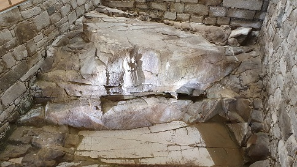
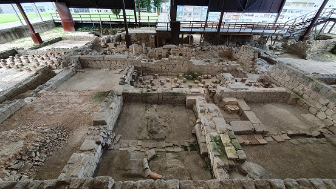
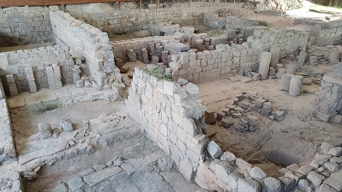
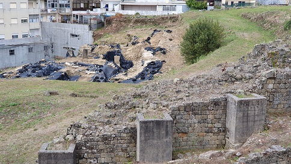
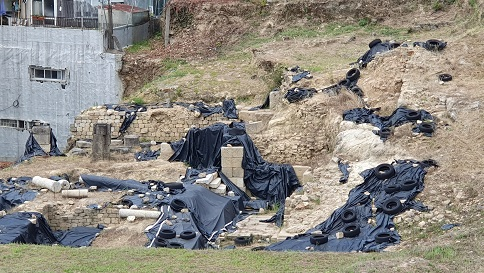
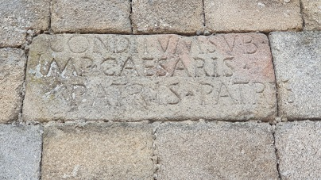

BRAGA
Braga, "Bracara Augusta", antigua
capital de la tribu celta de los Bracari, fundada por Augusto alrededor
del 16 a.e.c. Uno de los centro urbanos más importantes del noroeste
peninsular. Comunicada por seis importantes Vías. En época Flavia,
Bracara Augusta recibió el estatuto de municipium y fue elevada a
capital del conventus iuridicus. Posteriormente fue la capital de la
provincia de Galecia, creada por Diocleciano.
En el transcurso del siglo IV, Bracara Augusta se convierte en la sede
episcopal, la mas antigua de Portugal. Capital de los Suevos, en el 585
fue incorporada al reino visigodo por Leovigildo.
En el mes de mayo se celebra el festival Braga Romana.
Ver video
La Fuente del Ídolo
Santuario pre-romano, vinculado al culto del agua y la fertilidad. Fue erigido en el siglo I, dedicado la diosa Nabia, por Celico Fronto, quien ordenó las esculturas e inscripciones visibles en frente del santuario. Posteriormente se renovó, construyendo un lago frente a la fuente.

Las Termas do Alto da Cividade
Las termas romanas de Maximinos fueron construidas a principios del siglo II sobre un edificio anterior, reformadas a finales del siglo III y abandonadas en el siglo V. Las termas fueron descubiertas en 1977 en la zona más alta de la ciudad. Los restos se encuentran fuera de lo que fue el recinto amurallado.
|
 |
 |
El Teatro romano
Junto al complejo termal se descubrió en 1999 un teatro romano, que aunque desgraciadamente fue utilizado como cantera cuando cayó en desuso, está siendo excavado. Fue construido a principios del siglo II y estuvo en funcionamiento hasta el siglo IV.
|
 |
 |
La Insula da Carvalheiras
Zona residencial que integra una Domus y varias Tabernae. Delimitada por calles y alineada con pórticos. Data de los siglos I-VI . En el siglo II, el propietario, restringió el área residencial y edifico un as termas. Se encuentran actualmente en proceso de musealización. Foto: Portugal Romano, Facebook.

La inscripción romana de Isis en la Catedral. Debajo de la Catedral se conservan los restos de un mercado romano.

De la Braga romana también destacamos:
- El Seminario de Santiago, en el claustro se localizan loa restos de una domus, cuyo peristilo se abría al decumanus maximus.
- En el sótano de establecimiento de Las Frigideiras do Cantinho, a través de una ventana arqueológica, se observan los restos de una domus datada en los siglos III - IV / V.
- La domus da Escola Velha da Sé,
se visitan los restos de una domus del siglo I al IV, de la que destacan
sus mosaicos y su espacio termal.
- El balneario pre-romano da Estaçao.
- La Biblioteca Lúcio Craveiro da Silva, donde se localizan los restos de una cloaca de época augusta.
- La muralla romana do Convento da Inmaculada.
- La Igreja de Santigo donde se localizan los vestigios de una insulae.
- Los restos de un edificio publico de época romana en la rua de Frei Caetano Brandao nº 142.
- La necrópolis de Bracara Augusta en Largo Carlos Amarante.
| IMPERIO ROMANO | MENÚ | PORTUGAL ROMANO |